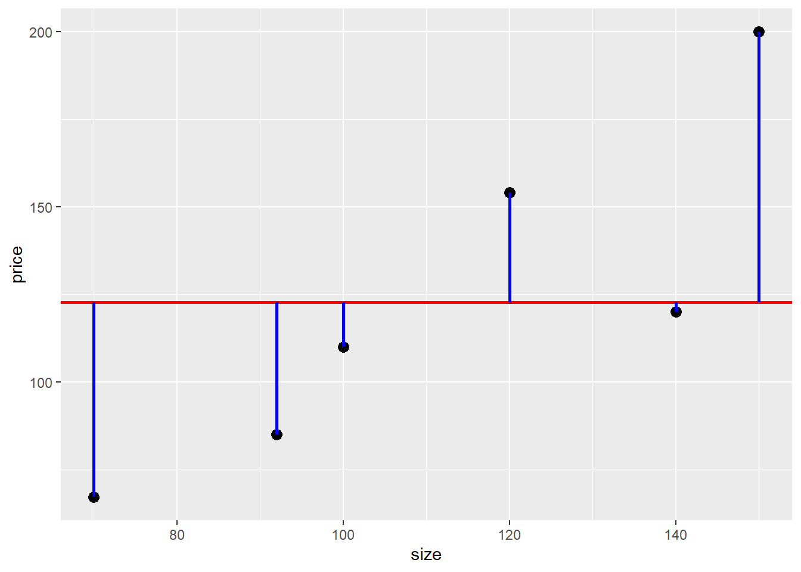
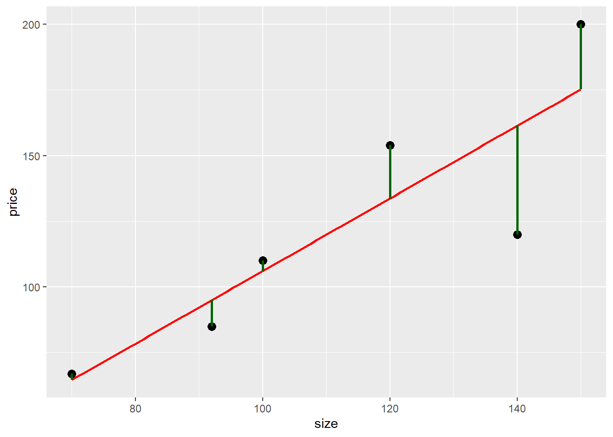

Show the code
library(ggplot2)
library(dplyr)
options(scipen = 999)library(ggplot2)
library(dplyr)
options(scipen = 999)Se trata de explicar el precio de una casa (en miles de dólares) usando su tamaño (m2).
casas <- data.frame(price = c(120, 85, 67, 200, 110, 154),
size = c(140, 92, 70, 150, 100, 120))
mean_price <- mean(casas$price)# Dataframe for the segments of error
casas_segments_mean <- casas %>% mutate(x = size,
xend = size,
y = price,
yend = mean_price)
ggplot(casas) +
geom_point(aes(x = size, y = price), size = 3) +
geom_hline(yintercept = mean_price, color = "red", size = 1) +
geom_segment(data = casas_segments_mean, aes(x = x, y = y, xend = xend, yend = yend),
colour = "blue",
size = 1) 
#|message: false
#|warning: false
lin_mod <- lm(price ~ size, data = casas)
casas$predicted_price <- lin_mod$fitted.values
ggplot(casas, aes(x = size, y = price)) +
geom_point(size = 3) +
geom_smooth(method = "lm", se = FALSE, color = "red", size = 1) +
geom_segment(aes(xend = size, yend = predicted_price), color = "darkgreen", size = 1)`geom_smooth()` using formula 'y ~ x'
# Total Sum of Squares. SUM of (y_i - y_mean)^2
TSS <- sum((casas$price - mean_price)^2)
# Sum of Squares of Residuals. SUM of (y_i - y_hat)^2
RSS <- sum((casas$price - casas$predicted_price)^2)
# R^2
R_s <- (TSS - RSS)/(TSS)
# Cálculo obtenido lm
R_s_lm <- summary(lin_mod)$r.squared
print(c(R_s, R_s_lm))[1] 0.7544956 0.7544956Note que \[ R^2 = \dfrac{TSS-RSS}{TSS} = \dfrac{TSS}{TSS} - \dfrac{RSS}{TSS} \]
\[ R^2 = 1 - \dfrac{RSS}{TSS}\]
Para nuestro ejemplo:
\[ R^2 = \dfrac{ \overbrace{11647}^{\text{VAR a explicar}} - \overbrace{2859}^{\text{VAR NO explicada por modelo}} } { \underbrace{11647}_{\text{VAR a explicar}} } = \dfrac{ \overbrace{11647 - 2859}^{\text{VAR explicada por el modelo}} } { \underbrace{11647}_{\text{VAR a explicar}} } = 0.7545\]
\(R^2\) establece el porcentaje de variación en el precio (variable respuesta) que es explicado por el modelo, es decir, por el tamaño tamaño (variable explicativa). En nuestro ejemplo, el 75.45% de variación en el precio es explicado por el tamaño.